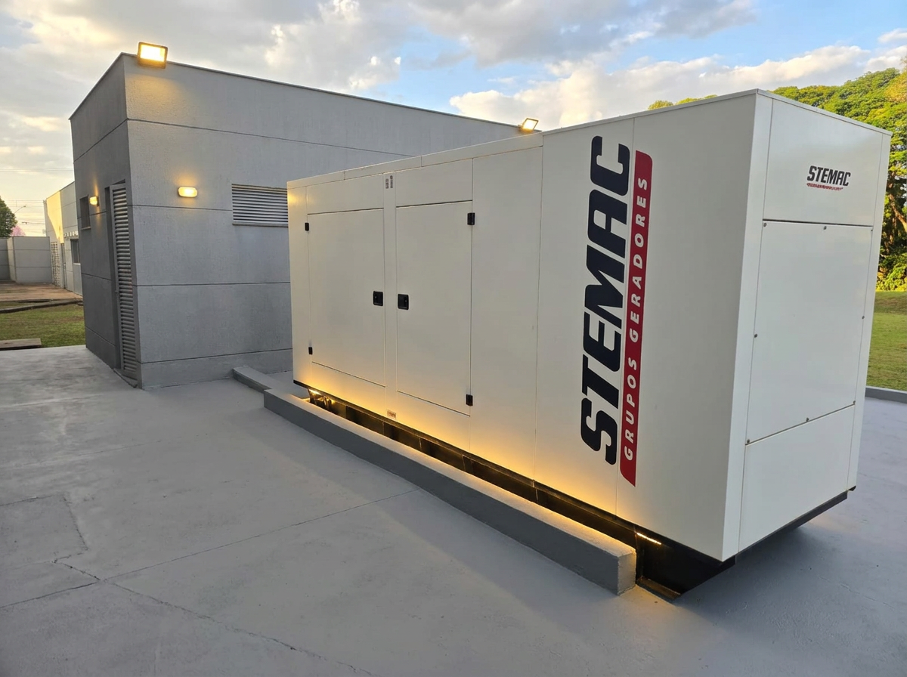

GERADORES / 01sistema online
Acesso operacional
Entre no
controle.
Uma vis?o precisa da energia cr?tica do Hospital Universit?rio de Londrina.
HUL ? ENERGIA CR?TICAv. 0.9.4
Uma vis?o precisa da energia cr?tica do Hospital Universit?rio de Londrina.
